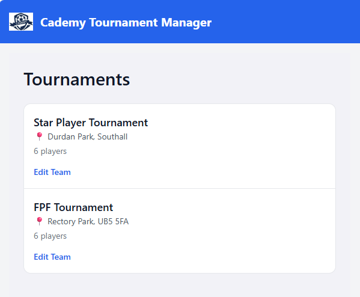
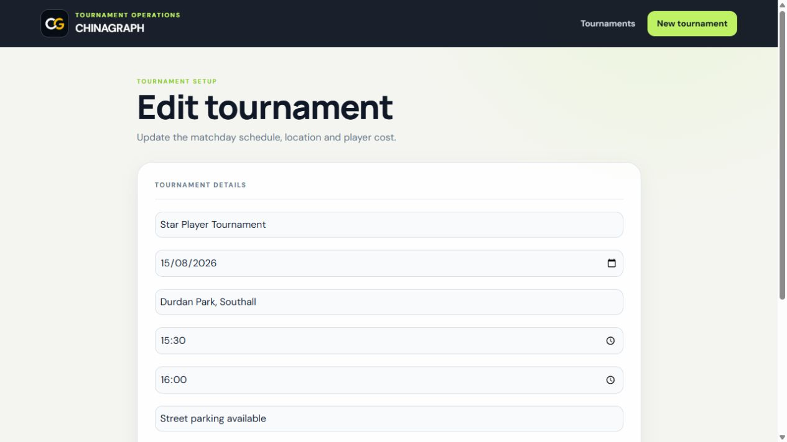
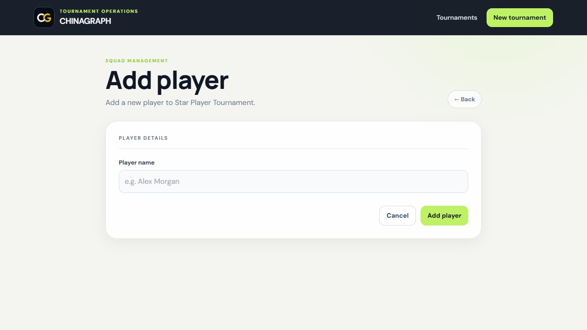
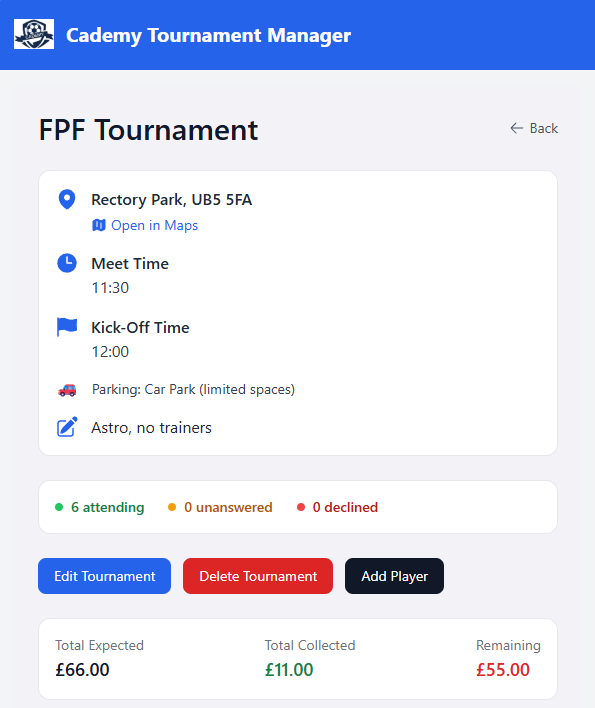
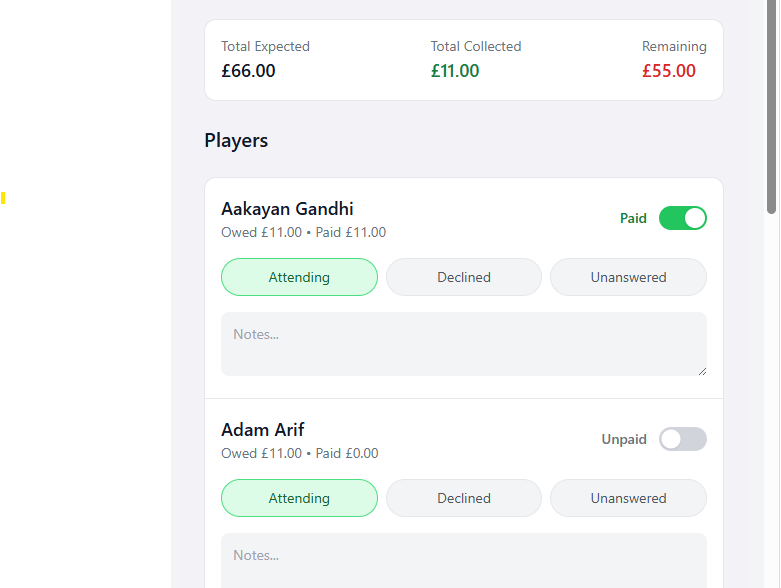

What is it?
Football Tournament Manager is a full-stack web application for organising grassroots football tournaments and making essential information available to organisers, coaches and parents.
Product Case Study
Designing a better way to organise grassroots football tournaments, bringing fixtures, players, payments and results together in one responsive application.

Project overview
Football Tournament Manager is a full-stack web application for organising grassroots football tournaments and making essential information available to organisers, coaches and parents.
Tournament details were often spread across WhatsApp messages, spreadsheets and paper schedules. I wanted to explore how a single digital product could make that information easier to manage and understand.
The result is a responsive application that centralises tournament administration while giving users a clearer view of fixtures, teams, players and payments.
The problem
Even a small tournament creates a surprising amount of information. When that information is managed manually, updates become harder to communicate and mistakes become more likely.
Paper schedules and message threads are difficult to update when match times, pitches or teams change.
Registrations and team details can become disconnected when they are recorded across multiple documents.
Tracking fees manually makes it harder to see which payments have been received and which remain outstanding.
Design goals
The experience needed to work for people who may be using it quickly, outdoors and primarily from a mobile device.
Present essential information clearly and avoid unnecessary steps or complex controls.
Create an experience that remains practical across phones, tablets and larger screens.
Use semantic structure, readable content and familiar interaction patterns from the beginning.
Separate responsibilities and use reusable components so the product can grow without becoming difficult to manage.
The solution
I designed the product around the core stages of organising a tournament: setting up the event, managing teams and players, scheduling fixtures and recording payments.
The React interface communicates with an ASP.NET Core REST API, which handles application logic and data operations. Entity Framework Core provides the connection between the API and the SQLite database.
This separation keeps the user interface focused on the experience while the server manages validation, persistence and the underlying tournament data.
Technical architecture
The application follows a client-server architecture, with each layer responsible for a distinct part of the system.
Front end
Handles reusable components, routing, application state and the responsive user interface.
Application layer
Exposes endpoints, validates requests and manages the application’s business logic.
Data access
Maps application models to relational data and manages database operations.
Database
Stores tournament, team, player and payment information in a lightweight relational database.
Key features
Tournament information is brought together in one central interface, making it easier to create, review and update each event.

Teams and players remain connected to the relevant tournament, reducing the need to maintain separate documents or message threads.

Match information can be presented in a consistent format so coaches and parents can quickly find the details they need.

Payment information is stored alongside the relevant tournament, providing a clearer view of completed and outstanding fees.

Engineering decisions
Every technology choice was made deliberately. I considered how each decision would affect maintainability, clarity, future growth and the overall development experience.
Front-end architecture
Building the interface from focused, reusable components.
React was chosen because it encourages interfaces to be built from small, reusable components rather than large, monolithic pages.
As the application grows, this structure makes features easier to maintain and extend without duplicating layout, state or behaviour.
Application layer
Keeping server-side logic separate from the user interface.
A dedicated REST API creates a clear boundary between the React interface, business rules and data operations.
This separation allows the front end and back end to evolve independently while providing a consistent set of endpoints for the application.
Data access
Working with strongly typed application models and relational data.
Entity Framework Core allowed the application to work with strongly typed domain models rather than relying on repetitive SQL for routine data operations.
It also provides a clear way to define the relationships between tournaments, teams, players and payments.
Data storage
A lightweight relational database suited to the current product scope.
SQLite was intentionally selected because the application is currently designed for a lightweight, single-instance deployment.
It keeps local development straightforward while still providing structured relational storage and support for the application's data relationships.
Product delivery
Deploying each part of the system independently.
The React client and ASP.NET Core API are deployed separately, reflecting the separation already established within the architecture.
This approach required the application to handle production API addresses, environment configuration, cross-origin requests and asynchronous failure states.
Development practice
Using AI to accelerate exploration without outsourcing engineering judgement.
AI supported research, debugging and the exploration of implementation approaches throughout the project.
Architectural choices, code validation, integration and final implementation remained my responsibility. Suggestions were reviewed, tested and refined before being accepted.
Inclusive design
Accessibility was treated as part of the product experience rather than a final-stage enhancement.
The application uses semantic HTML, clearly associated labels, logical heading levels and keyboard-accessible controls. Layouts adapt across screen sizes without requiring horizontal scrolling, while visible focus states help users understand where they are within an interaction.
Colour contrast, readable typography, descriptive content and meaningful feedback states were also considered throughout the interface.
Reflection
Building the complete application strengthened my understanding of how interface decisions, API design and data modelling affect one another.
I developed a stronger understanding of when to separate a component and when additional abstraction would add complexity without meaningful value.
Working with a live API reinforced the importance of loading, success, empty and error states as part of the core user experience.
Modelling tournaments, teams, players and fixtures demonstrated how early database decisions influence both API design and front-end behaviour.
Separating the deployed client and API highlighted the importance of environment variables, CORS configuration and production-specific settings.
Building features through focused Git branches and small commits made the project easier to test, review and refine.
AI tools supported research, debugging and exploration, while technical decisions, validation and final implementation remained guided by my own judgement.
Planned roadmap
The current application establishes the central tournament workflow. Future iterations could extend the experience for organisers, coaches and families.
Planned
Provide secure accounts with permissions for administrators, coaches and other tournament users.
Planned
Communicate fixture changes, results and tournament announcements as they happen.
Planned
Support tournaments that progress from group stages into elimination rounds.
Planned
Add score recording and automatically calculated standings so organisers and families can follow tournament progress in real time.
Planned
Introduce richer performance data across individual matches and complete tournaments.
Exploration
Explore progressive web application features for venues with unreliable mobile connectivity.
Exploration
Containerise the application and introduce a more automated deployment pipeline using cloud services.
Explore the project
Explore the live application or view more of my work and development activity on GitHub.